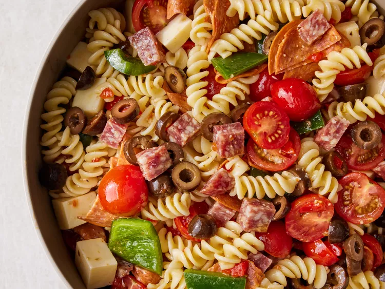

Pasta Salad Recipe

Description
This pasta salad with pepperoni, tomatoes, and provolone cheese
is one of the best available, and many different people eat it frequently.
It's a very easy, light-tasting side dish for a picnic or dinner.
Ingredients
- 1 (16 ounce) package fusili pasta
- 3 cups cherry tomatoes, halved
- 1/2 pound provolone cheese, cubed
- 1/2 pound salami, cubed
- 1/4 pound sliced pepperoni, cut in half
- 1 large green bell pepper, cut into 1 inch pieces
- 1 (10 ounce) can black olives, drained
- 1 (4 ounce) jar pimentos, drained
- 1 (8 ounce) bottle Italian salad dressing
Steps
- Gather all ingredients.
- Bring a large pot of lightly salted water to a boil. Cook fusilli pasta in the boiling water, stirring occasionally, until tender yet firm to the bite, about 12 minutes. Drain.
- Combine pasta with tomatoes, cheese, salami, pepperoni, green pepper, olives, and pimentos in a large bowl. Pour in salad dressing; toss to coat.
- Enjoy!